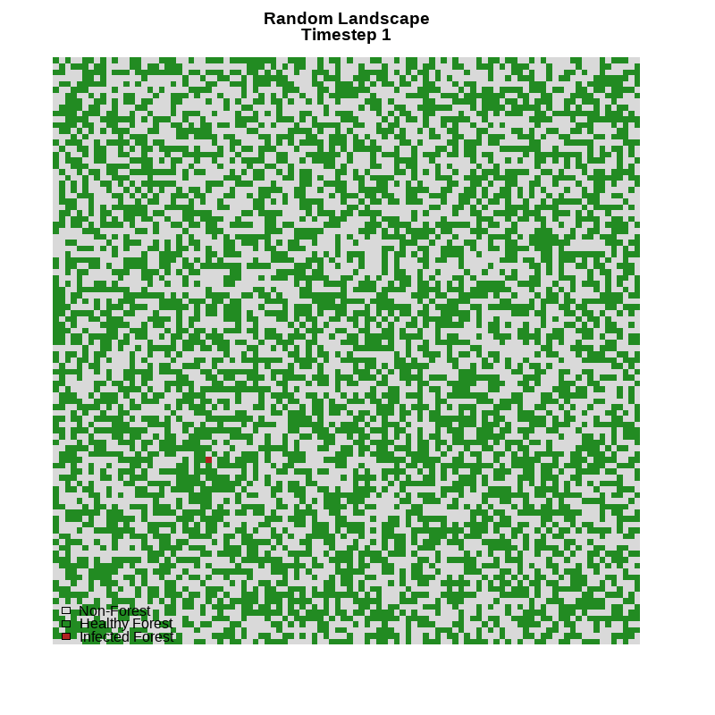
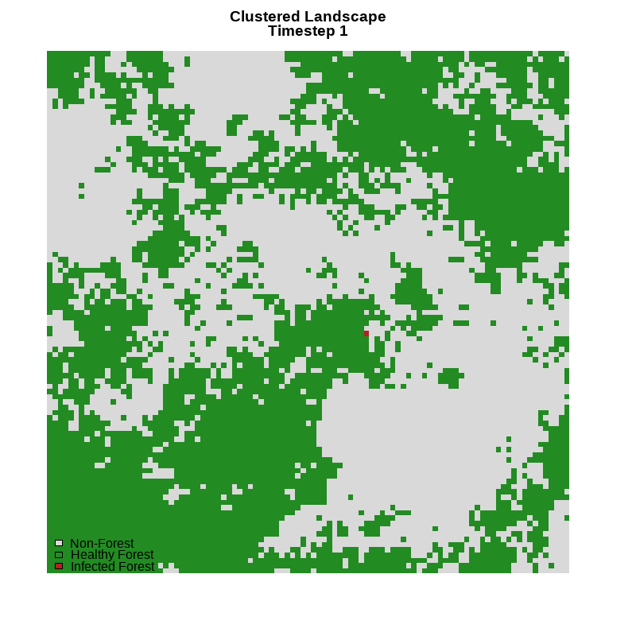
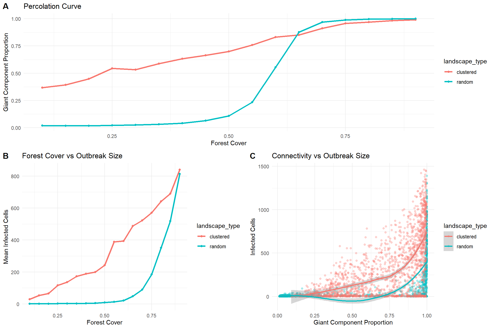

8 Simulation and Spreading
8.1 Introduction
Simulation modelling is a powerful tool in landscape analysis because it allows researchers to investigate ecological processes under controlled and repeatable conditions that would be difficult, costly, or impossible to observe directly in real landscapes. By generating artificial landscapes with known properties, researchers can isolate the effects of habitat amount, spatial arrangement, and connectivity on ecological processes such as species movement, disturbance propagation, gene flow, or disease transmission. Neutral Landscape Models (NLMs) are particularly useful because they create landscapes according to specified statistical rules rather than observed ecological patterns, allowing hypotheses about landscape structure and function to be examined without the confounding influences present in real-world systems.
This script uses simulation to examine how differences in landscape structure influence connectivity and the spread of a contagion process. The model is designed to identify critical connectivity thresholds predicted by percolation theory, where small increases in habitat cover cause isolated habitat patches to become linked into large connected networks, resulting in a rapid increase in the potential for landscape-scale contagion. This provides a rigorous framework for understanding how landscape pattern influences ecological processes and for exploring the consequences of habitat fragmentation and connectivity in complex spatial systems.
8.2 Spreading
This simulation is based on the principle that landscape pattern influences ecological connectivity, and that connectivity influences the ability of a process to spread across a landscape. Two neutral landscape models are generated: a completely random landscape and a spatially autocorrelated (clustered) landscape. Each landscape is converted into a binary raster in which cells are classified as either forest habitat or non-forest habitat according to a specified level of forest cover. By varying forest cover from 10% to 90%, the simulation examines how changes in habitat amount affect the formation of connected habitat networks.
Forest habitat is represented as a graph (network), where each forest cell is treated as a node and adjacent forest cells are connected by edges. This graph-based representation allows the landscape to be analysed using connectivity theory. Metrics such as the number of connected components, the size of the largest connected component, mean node degree, edge density, and clustering coefficient describe the structure of the habitat network. Of particular importance is the proportion of habitat contained within the largest connected component, which represents the amount of habitat that is accessible through continuous forest connections.


A contagion is any process that spreads from one location to another through a connected system. Although the term originates from epidemiology, in landscape ecology it can represent the spread of wildfire, pests, pathogens, invasive species, disturbances, information, or organisms moving through habitat. In this simulation, contagion begins in a randomly selected forest cell and spreads to neighbouring forest cells with a specified transmission probability. Because transmission can only occur through existing graph connections, the spread is constrained by the structure and connectivity of the landscape. Highly fragmented landscapes tend to limit contagion because movement is restricted to small, isolated habitat patches, whereas highly connected landscapes provide pathways that allow the contagion to propagate across much larger areas.
The simulation adopts a Monte Carlo framework in which hundreds of replicate landscapes are generated for every combination of landscape type and forest cover. Connectivity metrics and contagion outcomes are recorded and analysed statistically. A key objective is to identify patterns predicted by percolation theory, which examines how large-scale connectivity emerges as the proportion of occupied habitat increases. Percolation theory predicts that a critical threshold exists where a small increase in habitat cover causes many isolated patches to become connected into a large, landscape-spanning network known as a giant connected component. At this threshold, connectivity increases rapidly and contagion spread can shift from being highly localized to spreading across much of the landscape. Identifying this transition provides insight into how habitat amount, fragmentation, and connectivity jointly influence ecological processes at landscape scales.
library(NLMR)
library(raster)
library(igraph)
library(tidyverse)
set.seed(NULL)
a<-Sys.time()
#------------------------------------------------------------------------------
# USER SETTINGS
#------------------------------------------------------------------------------
n_sims <- 100
forest_cover_seq <- seq(
0.10,
0.90,
by = 0.05
)
landscape_types <- c(
"random",
"clustered"
)
nrow <- 50
ncol <- 50
p_transmit <- 0.35
max_steps <- 50
infectious_period <- 38.2.1 Simulated Landscapes
The create_landscape() function generates a binary forest landscape using a specified Neutral Landscape Model (NLM). The user can choose either a random landscape (nlm_random) or a spatially autocorrelated, clustered landscape (nlm_mpd) and define the desired forest cover and landscape dimensions (nrow and ncol). The selected NLM first produces a continuous raster surface containing values distributed according to the chosen landscape-generation process. A threshold value is then calculated using the specified forest-cover proportion (cover), corresponding to the selected quantile of the raster values. All cells with values less than or equal to this threshold are classified as forest habitat (1), while all remaining cells are classified as non-forest habitat (0). The resulting output is a binary raster representing a landscape with a prescribed percentage of forest cover but differing spatial patterns depending on whether a random or clustered landscape model was selected. This binary forest map serves as the foundation for subsequent connectivity analysis and contagion simulations.
#------------------------------------------------------------------------------
# LANDSCAPE GENERATION
#------------------------------------------------------------------------------
create_landscape <- function(
model,
cover,
nrow,
ncol){
if(model == "random"){
nlm <- nlm_random(
nrow = nrow,
ncol = ncol
)
} else {
nlm <- nlm_mpd(
nrow = nrow,
ncol = ncol,
roughness = 0.8
)
}
threshold <- quantile(
values(nlm),
probs = cover,
na.rm = TRUE
)
forest <- nlm
forest[] <- as.integer(
values(nlm) <= threshold
)
forest
}8.2.2 Spreading with a graph
The build_graph() function converts the binary forest landscape into a graph (network) representation that can be analyzed using graph theory. First, all forest cells are identified by selecting raster cells with a value of 1, representing habitat. The function then uses the adjacent() routine to determine which forest cells are connected through a four-neighbour rule (north, south, east, and west). These adjacency relationships are filtered so that only connections between forest cells are retained, excluding any links that would involve non-forest habitat. In ecological terms, this step transforms the raster landscape into a network where each forest cell becomes a potential habitat node and neighboring forest cells become connected through edges, thereby representing the structural connectivity of the landscape.
The adjacency information is then used to construct an undirected graph using graph_from_edgelist(), where movement or contagion can occur in both directions between connected habitat cells. The function also includes safeguards for highly fragmented landscapes. If no adjacent habitat cells exist, an empty graph is created containing only isolated habitat nodes. Similarly, any forest cells that do not appear in the adjacency list are added as isolated vertices to ensure that every habitat cell is represented in the final network. The resulting graph therefore provides a complete representation of the habitat configuration, including both connected habitat patches and isolated cells. This graph serves as the foundation for subsequent connectivity analyses, such as calculating connected components and giant component size, as well as for simulating contagion spread through the landscape.
#------------------------------------------------------------------------------
# BUILD GRAPH
#------------------------------------------------------------------------------
build_graph <- function(forest){
forest_cells <- which(
values(forest) == 1
)
adj <- adjacent(
forest,
cells = forest_cells,
directions = 4,
pairs = TRUE
)
adj <- adj[
adj[,1] %in% forest_cells &
adj[,2] %in% forest_cells,
]
if(nrow(adj) == 0){
g <- make_empty_graph(
n = length(forest_cells),
directed = FALSE
)
V(g)$name <- as.character(
forest_cells
)
return(g)
}
g <- graph_from_edgelist(
matrix(
as.character(as.matrix(adj)),
ncol = 2
),
directed = FALSE
)
missing_cells <- setdiff(
as.character(forest_cells),
V(g)$name
)
if(length(missing_cells) > 0){
g <- add_vertices(
g,
nv = length(missing_cells),
name = missing_cells
)
}
g
}
#------------------------------------------------------------------------------
# CONNECTIVITY METRICS
#------------------------------------------------------------------------------
calculate_metrics <- function(
g,
total_forest){
comp <- components(g)
list(
components =
comp$no,
largest_component =
max(comp$csize),
giant_component_prop =
max(comp$csize) /
total_forest,
mean_degree =
mean(degree(g)),
edge_density =
edge_density(g),
comp =
comp
)
}8.2.3 Contagion
The simulate_contagion() function models the spread of a contagion through a habitat network represented as a graph. The simulation begins by randomly selecting a forest cell (graph node) as the initial infection source. The function identifies the connected component containing this starting node and records the size of that component, providing a measure of the total habitat that is potentially accessible to the contagion. The starting node is added to the set of infected cells and is also placed in an active infectious pool. Each active node is assigned an age that tracks how long it remains capable of transmitting the contagion. The model therefore represents a susceptible–infectious–removed process, in which infected nodes can spread the contagion for a limited period before becoming inactive.
At each simulation step, every active infectious node attempts to transmit the contagion to its susceptible neighbouring nodes. Transmission occurs probabilistically according to the user-defined transmission probability (p_transmit). Newly infected cells are added to the infected population and become part of the active infectious pool with an initial age of zero. At the end of each timestep, the age of all active infectious nodes is increased, and nodes that exceed the specified infectious period are removed from the active pool and can no longer spread infection. The simulation continues until either the maximum number of timesteps is reached or there are no remaining active infectious nodes, indicating that the outbreak has died out. The function returns three outputs: the total number of infected cells, the number of timesteps over which the outbreak persisted, and the size of the connected habitat component in which the contagion originated. These outputs are subsequently used to quantify outbreak magnitude, outbreak duration, and the influence of habitat connectivity on contagion spread.
#------------------------------------------------------------------------------
# CONTAGION MODEL
#
# Frontier + Infectious Period
#------------------------------------------------------------------------------
simulate_contagion <- function(
g,
comp,
p_transmit = 0.35,
max_steps = 50,
infectious_period = 3){
start_node <- sample(
V(g)$name,
1
)
start_component <- comp$membership[
match(
start_node,
V(g)$name
)
]
start_component_size <- comp$csize[
start_component
]
infected <- start_node
active <- data.frame(
node = start_node,
age = 0,
stringsAsFactors = FALSE
)
for(step in seq_len(max_steps)){
new_nodes <- character(0)
#------------------------------------------------
# Active infectious nodes attempt transmission
#------------------------------------------------
for(i in seq_len(nrow(active))){
node <- active$node[i]
nbrs <- neighbors(
g,
node
)
nbr_names <- V(g)$name[
as.numeric(nbrs)
]
susceptible <- setdiff(
nbr_names,
infected
)
if(length(susceptible) > 0){
transmission <- runif(
length(susceptible)
) < p_transmit
newly_infected <- susceptible[
transmission
]
new_nodes <- c(
new_nodes,
newly_infected
)
}
}
new_nodes <- unique(new_nodes)
infected <- unique(
c(
infected,
new_nodes
)
)
#------------------------------------------------
# Update infectious ages
#------------------------------------------------
active$age <- active$age + 1
active <- active[
active$age <
infectious_period,
,
drop = FALSE
]
#------------------------------------------------
# Add new infections to active set
#------------------------------------------------
if(length(new_nodes) > 0){
active <- bind_rows(
active,
data.frame(
node = new_nodes,
age = 0
)
)
}
#------------------------------------------------
# Stop if outbreak dies
#------------------------------------------------
if(nrow(active) == 0){
break
}
}
list(
infected_cells =
length(infected),
outbreak_steps =
step,
start_component_size =
start_component_size
)
}8.2.4 Monte Carlo Simulation
The Monte Carlo simulation loop forms the core experimental framework of the model by repeatedly generating landscapes, calculating connectivity metrics, and simulating contagion spread across a wide range of landscape conditions. The experiment systematically evaluates every combination of landscape type (random and clustered) and forest-cover level (10–90%), and then performs a specified number of independent simulation replicates (n_sims) for each combination. For each replicate, a binary forest landscape is generated, converted into a habitat graph, and analyzed to quantify structural connectivity characteristics such as the number of connected components, the size of the largest connected component, the proportion of habitat contained within the giant component, mean node degree, and edge density. A contagion process is then initiated on the habitat network, and the resulting outbreak statistics—including the number of infected cells, outbreak duration, and size of the starting habitat component—are recorded. The results from each simulation are stored in a data frame along with derived measures describing the proportion of total habitat infected and the proportion of the starting connected component infected. By repeating this process thousands of times across a gradient of habitat cover and alternative landscape structures, the Monte Carlo framework captures the inherent variability of both landscape generation and contagion dynamics, producing a robust dataset that can be used to examine how habitat amount, connectivity, percolation, and contagion spread are related.
#------------------------------------------------------------------------------
# MONTE CARLO
#------------------------------------------------------------------------------
results <- list()
counter <- 1
for(type in landscape_types){
# cat(
# "\n====================================\n"
# )
#
# cat(
# "Landscape:",
# type,
# "\n"
# )
#
# cat(
# "====================================\n"
# )
for(cover in forest_cover_seq){
# cat(
# "Cover:",
# cover,
# "\n"
# )
for(sim in seq_len(n_sims)){
forest <- create_landscape(
model = type,
cover = cover,
nrow = nrow,
ncol = ncol
)
total_forest <- sum(
values(forest) == 1,
na.rm = TRUE
)
g <- build_graph(
forest
)
metrics <- calculate_metrics(
g,
total_forest
)
outbreak <- simulate_contagion(
g = g,
comp = metrics$comp,
p_transmit = p_transmit,
max_steps = max_steps,
infectious_period =
infectious_period
)
results[[counter]] <-
data.frame(
landscape_type = type,
forest_cover = cover,
simulation = sim,
components =
metrics$components,
largest_component =
metrics$largest_component,
giant_component_prop =
metrics$giant_component_prop,
mean_degree =
metrics$mean_degree,
edge_density =
metrics$edge_density,
infected_cells =
outbreak$infected_cells,
outbreak_steps =
outbreak$outbreak_steps,
start_component_size =
outbreak$start_component_size,
spread_total_habitat =
outbreak$infected_cells /
total_forest,
spread_start_component =
outbreak$infected_cells /
outbreak$start_component_size
)
counter <- counter + 1
}
}
}
#------------------------------------------------------------------------------
# SAVE RESULTS
#------------------------------------------------------------------------------
results_df <-
bind_rows(results)
# write.csv(
# results_df,
# "contagion_results.csv",
# row.names = FALSE
# )
#------------------------------------------------------------------------------
# SUMMARY
#------------------------------------------------------------------------------
summary_df <-
results_df %>%
group_by(
landscape_type,
forest_cover
) %>%
summarise(
mean_giant_component =
mean(
giant_component_prop
),
mean_outbreak_size =
mean(
infected_cells
),
mean_spread_component =
mean(
spread_start_component
),
.groups = "drop"
)
#------------------------------------------------------------------------------
# PERCOLATION CURVE
#------------------------------------------------------------------------------
p1<-ggplot(
summary_df,
aes(
forest_cover,
mean_giant_component,
colour = landscape_type
)
) +
geom_line(
linewidth = 1.2
) +
geom_point() +
labs(
title =
"Percolation Curve",
x =
"Forest Cover",
y =
"Giant Component Proportion"
) +
theme_minimal()
#------------------------------------------------------------------------------
# OUTBREAK SIZE CURVE
#------------------------------------------------------------------------------
p2<-ggplot(
summary_df,
aes(
forest_cover,
mean_outbreak_size,
colour = landscape_type
)
) +
geom_line(
linewidth = 1.2
) +
geom_point() +
labs(
title =
"Forest Cover vs Outbreak Size",
x =
"Forest Cover",
y =
"Mean Infected Cells"
) +
theme_minimal()
#------------------------------------------------------------------------------
# CONNECTIVITY VS OUTBREAK SIZE
#------------------------------------------------------------------------------
p3<-ggplot(
results_df,
aes(
giant_component_prop,
infected_cells,
colour = landscape_type
)
) +
geom_point(
alpha = 0.3
) +
geom_smooth(
method = "loess",
se = TRUE
) +
labs(
title =
"Connectivity vs Outbreak Size",
x =
"Giant Component Proportion",
y =
"Infected Cells"
) +
theme_minimal()8.3 RESULTS
| Connectivity and Contagion Summary | |||
| Monte Carlo Simulation Results | |||
| Forest Cover | Giant Component | Mean Outbreak Size | mean_spread_component |
|---|---|---|---|
| clustered | |||
| 0.10 | 0.37 | 29.9 | 0.65388794 |
| 0.15 | 0.39 | 53.9 | 0.58895763 |
| 0.20 | 0.45 | 65.7 | 0.61344379 |
| 0.25 | 0.54 | 116.4 | 0.59876272 |
| 0.30 | 0.53 | 136.5 | 0.57150533 |
| 0.35 | 0.59 | 173.2 | 0.54647309 |
| 0.40 | 0.63 | 189.5 | 0.52615016 |
| 0.45 | 0.66 | 200.2 | 0.49469457 |
| 0.50 | 0.70 | 243.1 | 0.42657596 |
| 0.55 | 0.76 | 388.6 | 0.52111643 |
| 0.60 | 0.83 | 393.7 | 0.46842176 |
| 0.65 | 0.85 | 487.0 | 0.44706743 |
| 0.70 | 0.91 | 521.7 | 0.40308083 |
| 0.75 | 0.96 | 570.0 | 0.36288544 |
| 0.80 | 0.97 | 641.0 | 0.36371783 |
| 0.85 | 0.98 | 689.6 | 0.37079552 |
| 0.90 | 0.99 | 839.9 | 0.40686268 |
| random | |||
| 0.10 | 0.02 | 1.3 | 0.93283333 |
| 0.15 | 0.02 | 1.5 | 0.88521795 |
| 0.20 | 0.02 | 2.0 | 0.85549206 |
| 0.25 | 0.02 | 2.7 | 0.82750706 |
| 0.30 | 0.02 | 3.0 | 0.74682716 |
| 0.35 | 0.03 | 3.5 | 0.69414728 |
| 0.40 | 0.04 | 4.3 | 0.61745172 |
| 0.45 | 0.06 | 6.1 | 0.50960930 |
| 0.50 | 0.11 | 9.5 | 0.47093280 |
| 0.55 | 0.23 | 13.8 | 0.32508020 |
| 0.60 | 0.55 | 22.1 | 0.17559518 |
| 0.65 | 0.88 | 48.4 | 0.08775378 |
| 0.70 | 0.97 | 90.4 | 0.06593351 |
| 0.75 | 0.99 | 185.0 | 0.09992307 |
| 0.80 | 1.00 | 350.5 | 0.18416924 |
| 0.85 | 1.00 | 518.4 | 0.24422495 |
| 0.90 | 1.00 | 812.7 | 0.36127822 |
The Connectivity and Contagion Summary table illustrates how increasing forest cover influences both habitat connectivity and the potential for contagion spread across the landscape. The mean giant component proportion represents the proportion of all habitat cells contained within the largest connected habitat network and serves as a measure of landscape-scale connectivity. Values near zero indicate highly fragmented habitat, whereas values approaching one indicate that most habitat belongs to a single connected network. The mean outbreak size represents the average number of habitat cells infected during the contagion simulations and provides a measure of the magnitude of contagion spread. As forest cover increased, both metrics generally increased, indicating that larger amounts of habitat promoted the development of connected habitat networks capable of sustaining larger outbreaks. Clustered landscapes consistently exhibited higher giant component proportions and larger outbreak sizes than random landscapes at equivalent forest cover levels, demonstrating that habitat configuration strongly influences connectivity. In random landscapes, outbreak sizes remained relatively small until forest cover reached approximately 55–65%, where a rapid increase in the giant component proportion was accompanied by a substantial increase in contagion spread. This pattern is characteristic of a percolation threshold, where previously isolated habitat patches become linked into a landscape-spanning network, allowing contagion to move across much larger portions of the landscape. Overall, the table suggests that forest cover is the primary driver of outbreak potential, while connectivity—as measured by the giant component proportion—acts as the mechanism through which increasing habitat availability facilitates large-scale contagion spread.The simulation results demonstrate a strong relationship between landscape structure, habitat connectivity, and contagion spread.

The contagion simulations closely mirrored these connectivity patterns. In clustered landscapes, outbreaks were able to spread through large portions of the habitat network at much lower forest cover levels because extensive connected pathways already existed. Random landscapes, by comparison, supported only very small outbreaks until habitat cover approached the percolation threshold. Once this threshold was crossed and a large connected habitat network formed, outbreak size increased rapidly. This correspondence between the connectivity and outbreak curves strongly suggests that the emergence of large connected habitat networks is a prerequisite for landscape-scale contagion spread.
m1 <- lm(
infected_cells ~
forest_cover +
landscape_type,
data = results_df
)
m2 <- lm(
infected_cells ~
giant_component_prop +
landscape_type,
data = results_df
)
m3 <- lm(
infected_cells ~
forest_cover +
giant_component_prop +
landscape_type,
data = results_df
)
summary(m1)
##
## Call:
## lm(formula = infected_cells ~ forest_cover + landscape_type,
## data = results_df)
##
## Residuals:
## Min 1Q Median 3Q Max
## -662.79 -147.95 -9.49 126.30 941.79
##
## Coefficients:
## Estimate Std. Error t value Pr(>|t|)
## (Intercept) -71.299 9.711 -7.342 2.62e-13 ***
## forest_cover 817.876 15.965 51.231 < 2e-16 ***
## landscape_typerandom -215.581 7.821 -27.564 < 2e-16 ***
## ---
## Signif. codes: 0 '***' 0.001 '**' 0.01 '*' 0.05 '.' 0.1 ' ' 1
##
## Residual standard error: 228 on 3397 degrees of freedom
## Multiple R-squared: 0.4991, Adjusted R-squared: 0.4988
## F-statistic: 1692 on 2 and 3397 DF, p-value: < 2.2e-16
summary(m2)
##
## Call:
## lm(formula = infected_cells ~ giant_component_prop + landscape_type,
## data = results_df)
##
## Residuals:
## Min 1Q Median 3Q Max
## -471.60 -165.51 29.47 69.68 994.92
##
## Coefficients:
## Estimate Std. Error t value Pr(>|t|)
## (Intercept) -5.614 10.505 -0.534 0.593
## giant_component_prop 481.472 12.027 40.032 < 2e-16 ***
## landscape_typerandom -69.556 9.326 -7.458 1.11e-13 ***
## ---
## Signif. codes: 0 '***' 0.001 '**' 0.01 '*' 0.05 '.' 0.1 ' ' 1
##
## Residual standard error: 250.2 on 3397 degrees of freedom
## Multiple R-squared: 0.3967, Adjusted R-squared: 0.3963
## F-statistic: 1117 on 2 and 3397 DF, p-value: < 2.2e-16
summary(m3)
##
## Call:
## lm(formula = infected_cells ~ forest_cover + giant_component_prop +
## landscape_type, data = results_df)
##
## Residuals:
## Min 1Q Median 3Q Max
## -655.23 -146.66 -12.75 126.11 938.69
##
## Coefficients:
## Estimate Std. Error t value Pr(>|t|)
## (Intercept) -74.401 9.919 -7.501 8.04e-14 ***
## forest_cover 779.874 29.539 26.402 < 2e-16 ***
## giant_component_prop 31.003 20.277 1.529 0.126
## landscape_typerandom -206.178 9.948 -20.725 < 2e-16 ***
## ---
## Signif. codes: 0 '***' 0.001 '**' 0.01 '*' 0.05 '.' 0.1 ' ' 1
##
## Residual standard error: 228 on 3396 degrees of freedom
## Multiple R-squared: 0.4994, Adjusted R-squared: 0.499
## F-statistic: 1129 on 3 and 3396 DF, p-value: < 2.2e-16Statistical modelling further supported these patterns. Forest cover was the strongest predictor of outbreak size, explaining a substantial proportion of the variation in the number of infected cells. Giant component proportion was also strongly related to outbreak size when examined independently, indicating that landscapes containing larger connected habitat networks tended to support larger outbreaks. However, when both forest cover and connectivity were included in the same model, the effect of giant component size became much weaker. This occurred because forest cover and connectivity were themselves highly correlated, indicating that increasing habitat amount simultaneously increases landscape connectivity and the potential for contagion spread.
Taken together, the results suggest that habitat amount acts as the primary driver of contagion dynamics, while connectivity serves as the mechanism through which habitat amount influences outbreak size. Clustered landscapes consistently produced larger and earlier outbreaks because habitat cells were organized into connected networks at lower levels of forest cover. Random landscapes required substantially greater habitat cover before a giant connected component emerged and contagion could spread extensively. Overall, the study provides strong evidence that percolation processes govern the transition from localized outbreaks in fragmented landscapes to landscape-scale contagion in highly connected systems, highlighting the critical role of habitat configuration and connectivity in determining ecological spread processes.
8.4 Summary
This experiment used a Monte Carlo simulation framework to investigate how habitat amount and landscape configuration influence connectivity and contagion spread across neutral landscapes. Random and clustered forest landscapes were generated across a habitat-cover gradient ranging from 10% to 90%, converted into habitat networks using graph theory, and analyzed to quantify structural connectivity, including the formation of giant connected components. A probabilistic contagion model was then applied to each network, allowing infections to spread through connected habitat cells while accounting for a finite infectious period. The results revealed that clustered landscapes maintained large connected habitat networks at much lower levels of forest cover, whereas random landscapes remained highly fragmented until a pronounced percolation threshold emerged between approximately 55% and 65% forest cover. Once this threshold was crossed, connectivity increased rapidly and was accompanied by a dramatic increase in outbreak size. Statistical analyses identified forest cover as the strongest predictor of contagion spread, while connectivity acted as the mechanism linking habitat amount to outbreak dynamics. Overall, the results support percolation theory predictions by demonstrating that increases in habitat cover can trigger a transition from fragmented landscapes supporting only localized outbreaks to highly connected landscapes capable of sustaining large-scale contagion events, with clustered landscapes consistently exhibiting greater connectivity and larger outbreaks than random landscapes at equivalent habitat-cover levels.